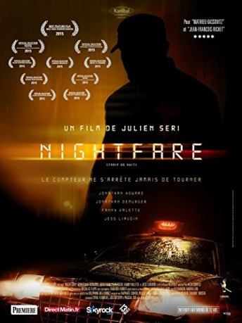

 
 IMDB-Wertung: 5.4 / 10
IMDB-Wertung: 5.4 / 10  Metascore:
Metascore: 
After a long two-year absence, the British Chris heads back to Paris intending to rekindle his relationship with his ex-girlfriend Ludivine, and his estranged Frenchman friend, the cocky Luc. To celebrate their reunion, Luc takes Chris for a wild night out downtown; however, things will soon take a turn for the worse when Luc decides to bilk a taciturn Paris cab driver on their way to the apartment. And just like that, an endless night of terror begins for the pair who skipped out on the fare, as the relentless and unstoppable wronged driver will hunt them down across the empty night streets in his jet-black taxi of doom. The meter is still running. Can the friends escape their debt?
Jahr: 2015
Dauer: 80 Minuten
FSK: 18
Land: Frankreich Studio: Sunfilm EntertainmentTonspuren:
Untertitel: Deutsch,
Auflösung: 1080p (1920x808) Größe: 2959 MB
Genre: Thriller
Regisseur: Julien Seri
Drehbuch: Cyril Ferment
Soundtrack: Alex Cortés
Darsteller:
 Jonathan Howard als Chris
Jonathan Howard als Chris Edouard Montoute als Le policier
Edouard Montoute als Le policierDatei: X:\FSK18-2015\Night Fare - Bezahl mit deinem Leben (2015, FSK18, 1920x808) 3D.mkv seit 01.03.2018
Festplatte: FSK18
 Es gibt insgesamt 23 Filme in der Gruppe 'FSK18-2015'
Es gibt insgesamt 23 Filme in der Gruppe 'FSK18-2015'